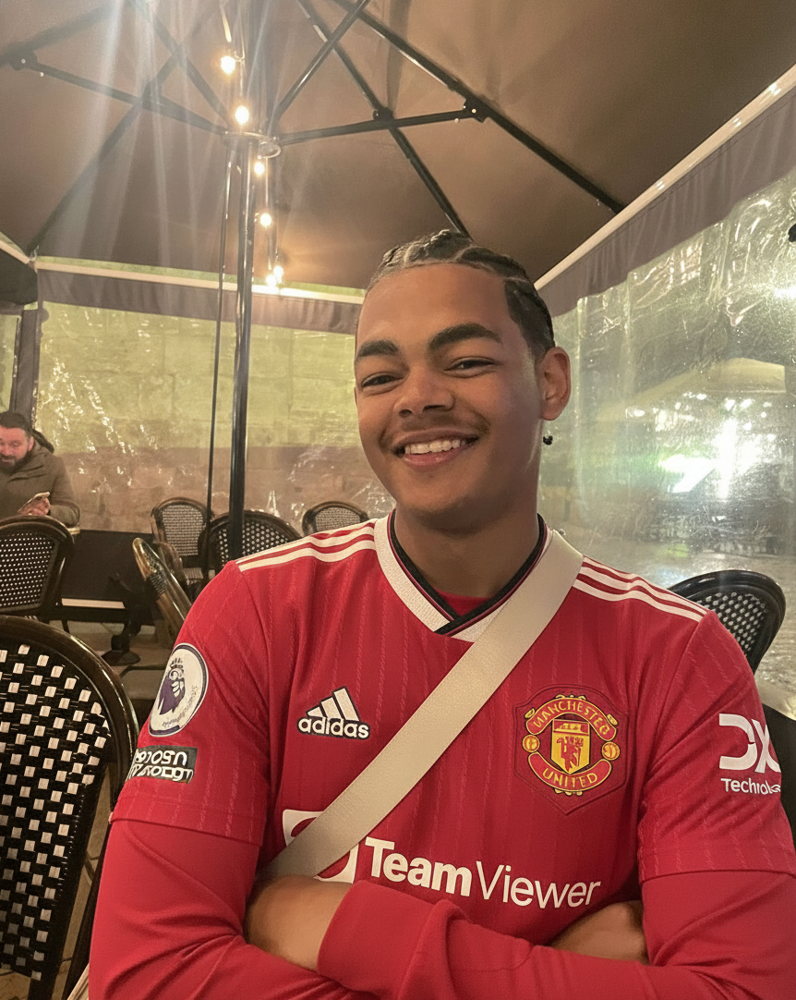
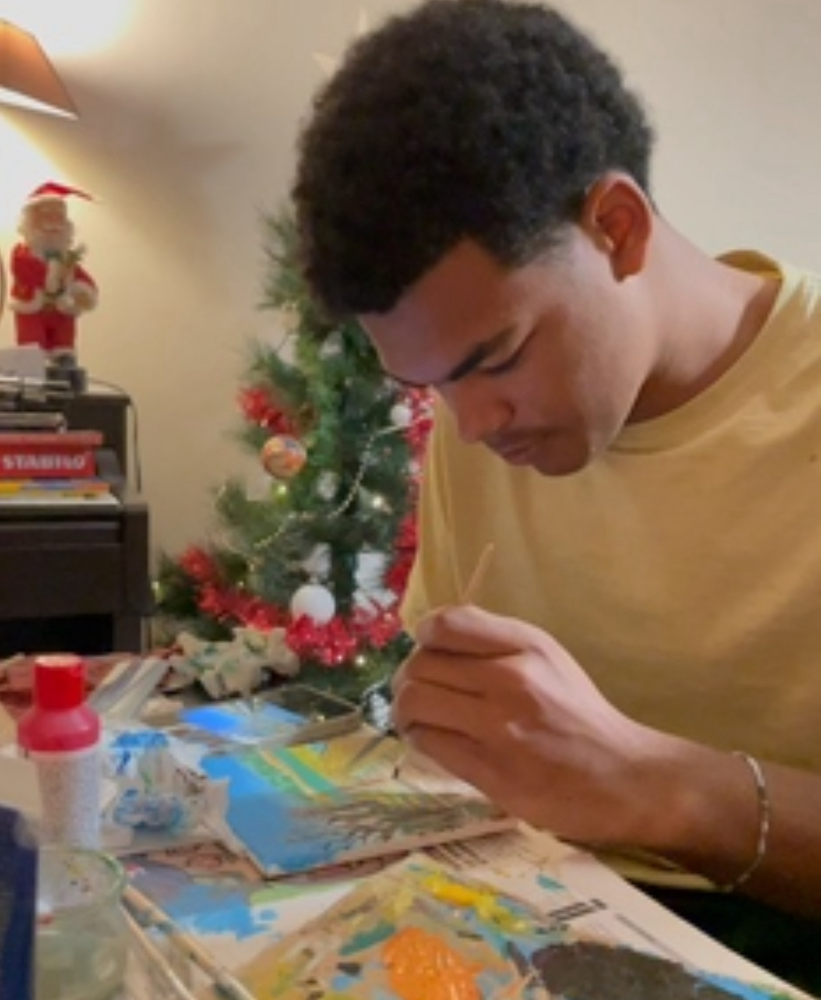
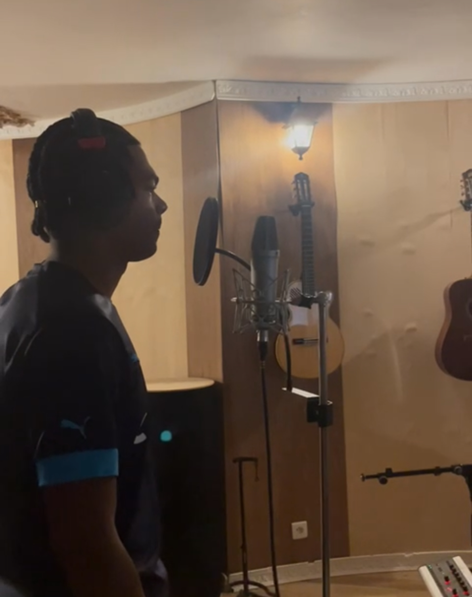

Qui suis-je ?
Apprenez en un peu plus sur moi, en dehors du travail !
Plus de moi
Depuis tout petit, j’ai une passion assumée pour le football, et surtout pour Manchester United, mon club de cœur depuis que je suis assez grand pour tenir un ballon. Cette passion n’est pas restée derrière un écran : j’ai joué cinq ans en club, ce qui m’a permis de vivre le foot de l’intérieur, avec toutes les émotions, les efforts et les valeurs que ce sport transmet.
Ces années m’ont appris bien plus que des gestes techniques. J’y ai découvert le vrai travail d’équipe, la capacité à communiquer, à se soutenir, à relever un coéquipier et à ne jamais laisser quelqu’un avancer seul. Le foot m’a donné une vraie discipline, le sens de la rigueur, de la détermination, mais aussi l’importance de la cohésion, du respect et de l’envie de se dépasser ensemble pour atteindre un objectif commun.
Ce sport m’a transmis des valeurs fortes comme l’esprit collectif, l’entraide, la persévérance, la solidarité et la culture de l’effort. Aujourd’hui encore, cette mentalité m’accompagne dans tout ce que j’entreprends : avancer avec les autres, rester motivé, viser la performance, et garder cette énergie positive qui fait la beauté du football..
Depuis toujours, je baigne dans l’art comme d’autres dans le sport. J’ai grandi avec un crayon dans une main, un pinceau dans l’autre, et de la musique en fond sonore. Le dessin, la peinture et la musique font partie de moi depuis que je suis petit. Ce que j’aime par-dessus tout, c’est cette sensation de créer quelque chose qui n’existait pas cinq minutes plus tôt. L’art me permet de m’exprimer, d’explorer, de tester, d’effacer, de recommencer, et surtout de partager.

Créer n’est pas juste un passe-temps pour moi. C’est une manière de connecter avec les autres, de transmettre des émotions, des idées, des univers. Que ce soit une mélodie, une toile ou un simple croquis, j’adore voir ce que ça peut provoquer chez les gens. C’est cette dimension humaine, presque magique, qui me motive à continuer et à évoluer. L’art fait partie de mon ADN, et je prends plaisir à le partager dès que j’en ai l’occasion.